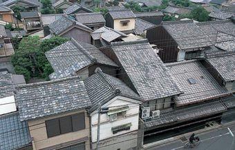

京都市の北東部に広がる地域のこと。15世紀、武将たちが東西に分かれて10年も戦った戦乱で、西軍が本陣を築いたことが地名の由来。その後、織物職人が集まって「西陣織」が生まれ、国際的にも高い評価を得ている。今も古い町家が数多く残り、風情ある町並みを形作っている。だが一方で、町家を改築したレストランが誕生したり多様なアーティストが集まったりするなど、古さと新しさが共存する町として発展している。戻り
David Felipe Rico HernandezUniversidad Nacional de Colombia